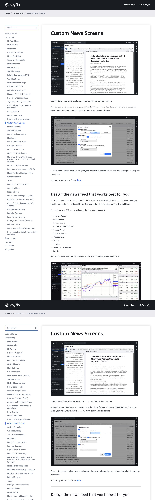
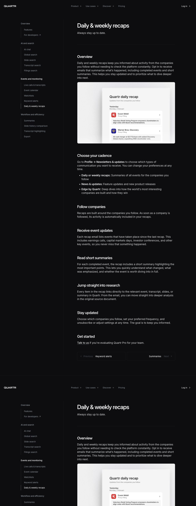
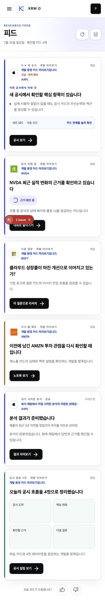

살릴 것
로고·티커·발생 시점·SEC 원문이라는 단서는 좋습니다. 특히 “근거가 보이는” 제품 약속과 맞습니다.
가장 큰 문제는 시각 효과가 아닙니다. 모든 신호가 같은 크기·같은 CTA·같은 설명 문법으로 반복되고, 실제 투자 판단 대신 “이 UI를 점검할 수 있습니다”라는 시스템 설명이 앞에 옵니다. 피드를 오늘 먼저 봐야 할 한 가지 + 빠르게 훑는 신호 목록 + 이어갈 연구로 나누면 훨씬 사람 편집자가 고른 리서치 제품처럼 보입니다.
디자인 폴리시는 이미 충분합니다. 문제는 정보의 편집입니다.
로고·티커·발생 시점·SEC 원문이라는 단서는 좋습니다. 특히 “근거가 보이는” 제품 약속과 맞습니다.
“개발 환경 카드 미리보기입니다”, “상태와 폴링 UI를 점검…” 같은 메타 설명. 사용자의 판단에 아무 도움도 주지 않습니다.
모든 항목을 18px 둥근 흰 카드+왼쪽 색 막대+검은 버튼으로 만들지 않습니다. 신호의 중요도에 따라 밀도를 다르게 합니다.
PulseCard 하나로 렌더링하고, 같은 큰 카드·그림자·CTA를 주고 있습니다. 따라서 이 문제는 fixture만 바꿔서는 해결되지 않습니다.
문구, 위계, 행동 유도 모두가 같은 템플릿을 반복합니다.
현재의 “개발 미리보기”, “카드의 우선순위와 액션을 점검”은 제품 데모용 문장입니다. 사람 편집자는 ‘무슨 일이 있었고 왜 지금 보나’를 말합니다.
새 8-K, 진행 중인 분석, 예전 메모 재노출, 학습 4컷이 모두 동일한 높이와 검은 CTA를 받습니다. 사용자는 무엇을 먼저 읽어야 하는지 판단해야 합니다.
eyebrow → reason → 긴급 → ticker → 제목 → 본문 → 원문 strip → CTA가 한 카드에 모두 있습니다. 각각은 합리적이지만, 합치면 ‘AI가 빠짐없이 설명한 화면’이 됩니다.
카드 전체가 링크인데 다시 검은 버튼이 반복됩니다. 클릭 가능한 모든 것에 CTA를 붙이면 오히려 행동 우선순위가 사라지고, 금융 리서치 피드보다 랜딩 페이지처럼 느껴집니다.
구역을 많이 만들자는 뜻이 아닙니다. 한 화면에서 무게만 분명하게 나눕니다.
회사 · 공시/이벤트 · 시간 → 단정적인 변화 제목 → 근거 한 줄 → 원문 / 이 변화로 질문. 실제 증거가 있을 때만 노출합니다.
각 행은 64~88px. “14:10 · NVDA · 분석 · 근거 3개 수집 중”처럼 한 번에 훑고, 행 전체를 눌러 상세로 갑니다. 검은 버튼은 없습니다.
프로세스 설명 대신 현재 상태와 남은 가치만 보입니다. 예: “근거 3개 확인됨 · 답변 준비 중”.
실제 공시와 연결될 때만 작은 ‘읽는 법’ 도움말로 넣습니다. 빈 4칸 패널은 기본 피드의 집중을 깨뜨립니다.
8-K · 7월 26일 · 원문 같은 사실형 메타데이터.새 디자인 시스템보다 편집 규칙을 먼저 고정합니다.
`개발 미리보기`, `점검` 같은 단어를 제거합니다. QA fixture가 필요하면 내부 디버그 배너로 격리하고, 카드 자체는 실제 데이터 구조의 사실·해석·근거로 채웁니다.
리드 조사 카드(0~1), 플랫 신호 행(대부분), 진행 중 연구 행(최대 1). 현행 `PulseCard` 하나가 모든 종류를 덮는 구조를 그대로 확장하지 않습니다.
각 피드 item은 무슨 변화인가 / 왜 이 사용자에게 지금 중요한가 / 어디가 근거인가만 채웁니다. 세 문장을 넘는 보조 설명은 상세 화면으로 보냅니다.
관심 종목이 있는 사용자·대화만 한 사용자·신규 사용자를 각각 보며, 첫 화면에 리드가 없을 때도 피드가 빈약해 보이지 않는지 확인합니다.
그대로 베끼는 레퍼런스가 아니라, 이 피드에 적용할 원칙의 근거입니다.


리뷰의 기준이 된 로컬 개발 화면입니다.
